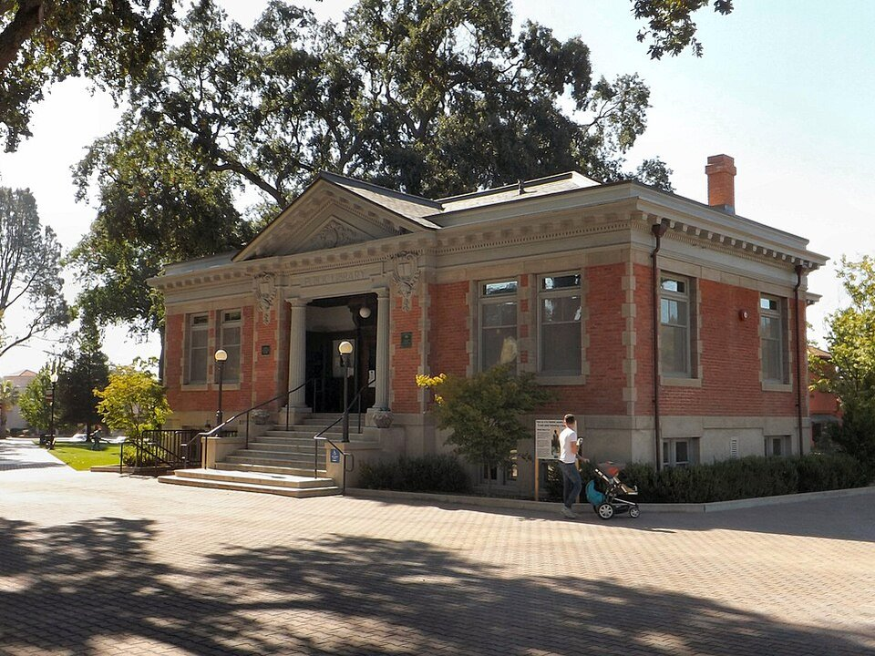

Vineyard resort
Allegretto Vineyard Resort
A Tuscan-style resort among its own vines, with art and a spa.
Official details for Allegretto Vineyard ResortBig reds and rolling hills.
Paso Robles is California wine country without the Napa crowds: oak-dotted hills, more than 200 wineries known for Cabernet and Rhône blends, and a friendly downtown square of tasting rooms and restaurants. Land at the municipal airport, see the Estrella Warbirds Museum on the field, stay at a vineyard resort, spend the day tasting with a driver, walk through Sensorio’s field of light at night and drive over the hills to Hearst Castle.

Time illustration: direct distance at 150 KTAS plus 15 minutes for departure and arrival, matching the discovery page. Use ForeFlight for your actual flight plan.
KPRB, Paso Robles Municipal, is a non-towered field at 839 feet with a 6,008-foot runway about 10 minutes from downtown. The Estrella Warbirds Museum is on the airport.
Paso Robles Municipal Airport, Paso Robles, CA
Hot summer afternoons; compute performance. Arrange a car or a wine-tour driver; don’t drive after tasting. No live fuel price is shown.
Inland Central California: hot summer afternoons with high density altitude, haze and wildfire smoke some summers, winter valley fog (tule fog) and Sierra storms. About 2050 nm from Myrtle Beach: two long days each way with several fuel stops. Plan a week, or overnight on the way out and back.
Rates and availability need travel dates. Harvest weekends book early.
A Tuscan-style resort among its own vines, with art and a spa.
Official details for Allegretto Vineyard ResortAn intimate hotel steps from the town square.
Official details for Hotel ChevalInns, ranches and vineyard stays.
Travel Paso for More places to stayReserve weekend dinners.
Chef Chico Mora’s seafood and steaks downtown, with an open kitchen and local wines. Dinner nightly, 4–9 p.m.
Official details for Catch Seafood Bar & GrillBrasserie cooking with local and French wines (formerly Bistro Laurent).
Official details for BL BrasserieLively Mexican food and a huge tequila list downtown.
Official details for Fish GauchoTaste in the morning and early afternoon, then rest.
William Randolph Hearst’s hilltop estate above the coast, about an hour west.
Hearst CastleThis prototype links to the local visitor site. It does not yet match events to your travel dates.
Winery events across the region.
Wine Country Alliance for Paso Robles Wine FestivalCrush season and harvest events.
Wine Country Alliance for HarvestConcerts and markets on the square.
Travel Paso for Downtown eventsCheck the local calendar when choosing a weekend, and confirm dates and tickets with the organizer.
A sample wine-country weekend. This is a two-day flight each way; plan a week. No bookings or availability confirmed.
Land at KPRB mid-morning.
The Estrella Warbirds Museum, then lunch at Fish Gaucho.
Two wineries with a driver, then back to the airport.
Land at KPRB, subject to weather and your actual flight plan.
The Estrella Warbirds Museum on the field.
Dinner at Catch.
Wineries west of town with a driver.
A rest by the pool.
Dinner at BL Brasserie, then Sensorio after dark.
A drive to Hearst Castle.
Return the car and allow time at the FBO.
Hot summer afternoons; leave early.
Wineries west of town.
Hearst Castle.
Dinner at Catch.
These details make the difference between an appealing list and a usable getaway.
Resort, then a wine driver.
About 2,050 nm from Myrtle Beach: two long days each way.
Many wineries prefer reservations.
April to June and September to November.
Picks and links reviewed by WingAway Weekends. Hours, prices, menus and availability change often, so confirm directly with each place before booking. Spotted something out of date, or have a favorite we missed? Email us at hello@wingawayweekends.com.
WingAway Weekends helps you discover the destination. Use ForeFlight and current official aviation information for route, performance, weather, NOTAMs and preflight decisions. Flight planning and PIC responsibility stay with the pilot.